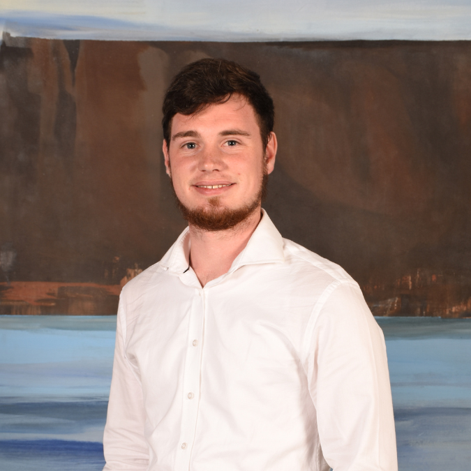

Rohan Ritter
Bachelor's Student in Web Design & Development at Stadio | Graduate Software Developer from Eduvos | Front-End Web & Graphics Designer
I am a passionate Front-End Web Developer and Designer with a strong focus on UX/UI design. I have earned a Higher Certificate in Information Systems (Software Development) from Eduvos, and I am currently advancing my studies at Stadio. My creativity drives me to continuously learn and refine my skills, and I thrive in collaborative environments where I can contribute and grow. I'm always eager for new opportunities to connect and collaborate.
Feel free to reach out!
Contact Me